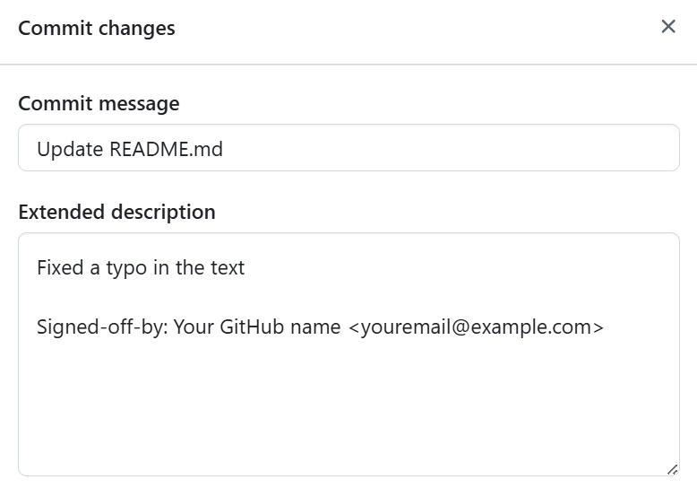
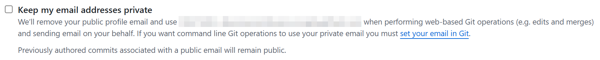

Developer Certificate of Origin (DCO)
What is the DCO and why is it needed?
The Developer Certificate of Origin (DCO) is a lightweight legal certification used in many open-source projects as an alternative to signing individual contributor agreements.
By adding a sign-off line to a commit, the developer confirms their authorship or the legal right to submit the code, and grants the project the right to use and distribute the contribution under the project’s license.
Unlike a Contributor License Agreement (CLA), which is a separate signed document, the DCO is an assertion embedded in each commit message. This means each contribution is accompanied by a declaration of its origin and licensing, and the contributor takes responsibility for the legitimacy of the code by signing off on each commit.
How the DCO works: A developer expresses their agreement with the terms of the DCO by adding a special “Signed-off-by” line at the end of each commit message. This line means the developer certifies the origin of the change.
⚠️ “Signing a commit” in the context of the DCO means adding a textual sign-off, not a GPG digital signature.
Full text of the DCO version 1.1
Original source: developercertificate.org
Below is the full text of the Developer Certificate of Origin version 1.1
Developer Certificate of Origin
Version 1.1
Copyright (C) 2004, 2006 The Linux Foundation and its contributors.
Everyone is permitted to copy and distribute verbatim copies of this
license document, but changing it is not allowed.
Developer's Certificate of Origin 1.1
By making a contribution to this project, I certify that:
(a) The contribution was created in whole or in part by me and I
have the right to submit it under the open source license
indicated in the file; or
(b) The contribution is based upon previous work that, to the best
of my knowledge, is covered under an appropriate open source
license and I have the right under that license to submit that
work with modifications, whether created in whole or in part
by me, under the same open source license (unless I am
permitted to submit under a different license), as indicated
in the file; or
(c) The contribution was provided directly to me by some other
person who certified (a), (b) or (c) and I have not modified
it.
(d) I understand and agree that this project and the contribution
are public and that a record of the contribution (including all
personal information I submit with it, including my sign-off) is
maintained indefinitely and may be redistributed consistent with
this project or the open source license(s) involved.
The project requiring DCO assumes that all contributors agree to this text. By adding the line “Signed-off-by” to a commit, you confirm that you have met the conditions listed in the DCO for that contribution.
How to sign commits (DCO Sign-off)
To “sign” your commit under the DCO, you need to add the following line at the end of your commit message:
You can manually add this line when writing the commit message. However, Git provides a convenient flag to do this automatically. Use the -s or --signoff option when creating a commit. For example:
This command will automatically add the “Signed-off-by” line to the commit message, using the name and email from your Git configuration.
Therefore, it is very important to properly configure the user.name and user.email settings in Git beforehand. Check that git config user.name contains your real name, and git config user.email – your email. To set them globally (for all repositories), use the following commands:
These settings determine how you are identified in each commit (as the author) and are used to fill in the sign-off line.
The name and email in the “Signed-off-by” line must exactly match the name and email of the commit author, otherwise, the DCO check may reject the sign-off.
When Git automatically adds a sign-off via -s, it uses exactly these settings. So make sure the email matches the one linked to your GitHub account, or the DCO bot may report a mismatch with the author.
⚠️ Do not confuse a DCO sign-off with a cryptographic commit signature. The DCO is just a textual declaration in the commit message, not a cryptographic verification. The -s flag adds the “Signed-off-by” line without any encryption. The -S flag, on the other hand, attaches a GPG digital signature to the commit to verify identity. DCO does not require this.
If you accidentally used git commit -S instead of -s, note that the DCO only checks for the presence of the line in the commit message. You can, of course, use both flags together (git commit -S -s) to digitally sign the commit and include the DCO sign-off. But -s alone is sufficient to meet the DCO requirement.
Typical Situations and How to Add a DCO Sign-off
Let's go over common situations involving a missing “Signed-off-by” line and how to fix them:
Local commit without DCO sign-off
Situation: You made one or more commits in your local repository but forgot to include the “Signed-off-by” line in the message. These commits haven't been pushed yet (e.g., no Pull Request has been created).
Solution: The easiest way is to use the amend command to edit the last commit and add the sign-off instead of creating a new commit.
or
This command will open your last commit for editing (or automatically add the sign-off without changing the rest of the message if run with the --no-edit flag), and will include the “Signed-off-by” line with your name and email.
The content of the commit (code changes) won't be changed, only the message. After this, the last commit will include the DCO sign-off.
If there are multiple commits missing a sign-off, see the interactive rebase section. But for just the latest commit, this is enough.
You can verify that the sign-off was added by running git log -1 and checking that the message includes “Signed-off-by: …”.
Commit already pushed to GitHub without a sign-off
Situation: You've already pushed the commit(s) to the remote repository (e.g., opened a Pull Request), and the DCO bot reports an error because the commit message lacks the sign-off.
Solution: You need to fix the commit history, add the sign-off, and force-push the updated history to GitHub. For just the last commit, you can use amend:
After this, the Pull Request on GitHub will be updated, and the DCO check should pass since the commit message now contains the required sign-off.
If the unsigned commit is not the most recent one in the branch, you’ll need to rewrite history a bit:
- You can do an interactive rebase (see the next scenario) and edit the message of the problematic commit.
- Or, if it’s a single older commit, do a rebase from that commit and apply --signoff. For example:
git rebase --signoff SHA^(where SHA is the hash of the problematic commit), which will replay all commits starting from that one and add sign-offs.
In general, fixing a pushed commit comes down to editing it and rewriting the remote history.
Multiple commits without sign-offs
Situation: Your Pull Request contains several commits, and one or more of them are missing the “Signed-off-by” line. As a result, the DCO check fails. You need to sign all of these commits without losing their changes.
Solution: Use Git's rebase functionality to add sign-offs to each commit. This can be done automatically or manually using interactive mode:
Automatically adding sign-offs:
You can use the --signoff option with the rebase command. It will automatically append “Signed-off-by” to each rebased commit. For example, if your last 3 commits in the branch are unsigned, run:
Git will automatically modify the last 3 commits, adding the sign-off line (with your name and email from your settings) to each one. After completing the rebase, push the changes:
Interactive rebase (manual method):
You can use Git’s interactive rebase mode. Suppose you have 3 unsigned commits. Run:
An editor will open with a list of these commits. Change the word pick to reword for each commit.
Close the editor, and Git will go through the commits one by one. For each commit, it will open your editor to change the message. In each message, simply add the line “Signed-off-by: …” at the end. Save and exit.
Alternatively, you can exit the editor without changing the message and run:
This command will automatically append the sign-off and commit it.
To move to the next commit, run:
Repeat until all commits are updated. Then, push the updated branch to the remote:
In some cases, if there are too many commits and editing them one-by-one is too time-consuming, you can squash all commits into one, add a single sign-off, and push again.
This will remove intermediate commits but ensure that the final commit has the sign-off.
In the command above, N is the number of commits. Mark the first commit as pick, and the others as squash. When the commit message editor opens, write the message and add the “Signed-off-by” line. Then force-push.
⚠️ Make sure this step is agreed upon with the maintainers — sometimes the commit history in a PR is important.
Sign-off when using squash/rebase before merging
Situation: You plan to squash your commits or rebase your branch onto the latest version of the main branch before merging, and want to ensure that all commits (or the final commit) have a DCO sign-off.
What to consider:
- If you squash multiple commits that already have sign-offs, the resulting commit may contain several “Signed-off-by” lines (one for each original commit). This is fine. The DCO has no limit on the number of sign-offs – what matters is that at least one matches the final commit's author. It's common to retain all sign-offs after a squash to reflect contributions from multiple authors.
- If you squash commits where some lacked a sign-off, you must manually add a sign-off in the combined commit message. When running:
You can copy it from one of the original commit messages (if it was present) or type it manually. - When you run
your commits are rewritten on top of the latest base. If they already had sign-offs, those will be preserved.
💡 The simplest approach is to always use the -s option when committing. That way, you won’t run into sign-off issues during rebase or squash.
How to sign a commit created through the GitHub interface
When creating commits via the GitHub web interface, there's a caveat: by default, GitHub does not include a “Signed-off-by:” line required for DCO compliance.
To manually add a sign-off, use the "Extended description" field of the commit and add a line in the format:

When creating commits through the GitHub web interface, a private email might be used automatically, like:
If GitHub uses a noreply email, just sign the commit using the same address:
Or disable email privacy: - Go to Settings → Emails - Uncheck "Keep my email addresses private"

DCO Bot Check on Pull Request
When you create a Pull Request in a repository where DCO is enabled, an automated check is usually triggered – often via the DCO bot (GitHub App) or CI. This bot inspects each commit in your PR for a proper sign-off.
In GitHub’s interface, you’ll see a status like: DCO — All commits have a DCO sign-off (if everything is fine) or an error message if something is wrong. DCO issues are usually marked with a red ❌ and a message like “All commits must have a DCO sign-off from the author.”
The DCO bot checks each commit message for two things: 1. The presence of a “Signed-off-by:” line. If any commit lacks it, the check fails. 2. Matching name and email between the sign-off line and the commit author’s info.
For example, if the commit author is “John Doe doe@example.com”, the bot expects to see “Signed-off-by: John Doe doe@example.com”. If it’s Jhon doe@example.com” (missing the last name) or the email differs even slightly, the check fails.
When the DCO check fails, the bot usually leaves a comment on the PR pointing out the issue. It may reference the commit hash and the reason: “Missing Signed-off-by” or “Expected Signed-off-by: X, but got Y.” It may also suggest git commands to fix the problem.
In essence, the bot guides you on how to make your PR compliant.